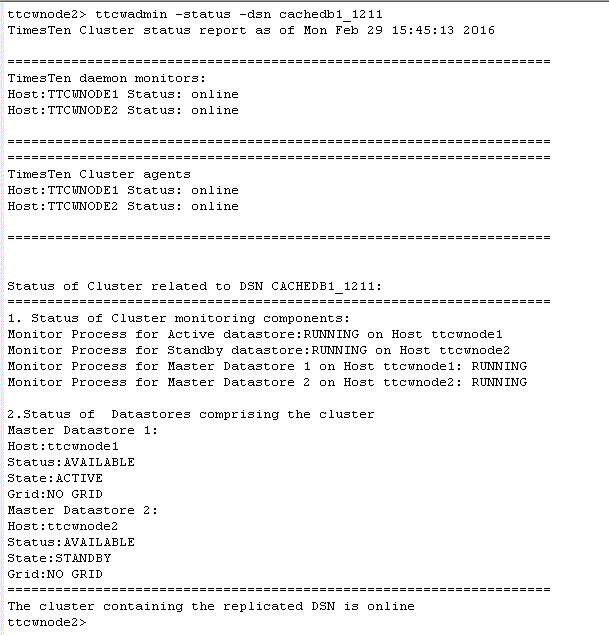
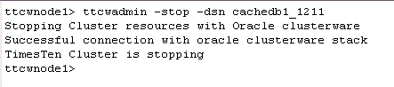
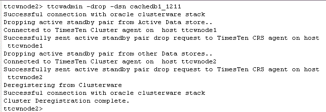

with Application-Tier Database Cache and Clusterware
The following three steps are the most common management tasks once the active standby pair has been created by ttCWAdmin:
1. Check the cluster agent status
Check the TimesTen cluster agent status by executing the ttCWAdmin -status command on one of the hosts. For example, on ttcwnode2:
ttcwadmin -status -dsn cachedb1_1211

2. Stop the cluster agents for the active standby pair
Stop the cluster agents by executing the ttCWAdmin -stop command on one of the hosts. For example, on ttcwnode1:
ttcwadmin -stop -dsn cachedb1_1211

3. Drop the active standby pair
Drop the active standby pair and de-register the cluster agents by executing the ttCWAdmin -drop command on one of the hosts. For example, on ttcwnode2:
ttcwadmin -drop -dsn cachedb1_1211

For more information about using, configuring and managing an active standby pair with TimesTen Cache and Oracle Clusterware refer to the documentation here